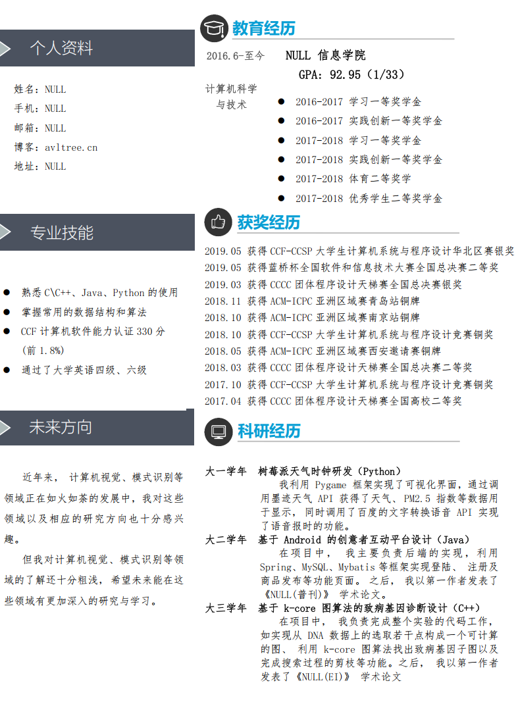

我的保研之路
个人情况
成绩
本科是北京的普通一本院校，一般985对双非院校的绩点要求是前5%。
由于我在的实验班绩点是单独排名(1/33，前3.03%)而不是整个系的排名(1/107，前0.93%)，导致了排名百分比其实并不占什么优势。
但其实因为地理因素，我们学校作为一个双非院校，其实分数线已经比一些偏远的211分数要高了（比如我省的南昌大学，逃）。
比赛
比较拿的出手的也只有ACM-ICPC的几个区域赛的铜牌了
论文
论文只有一篇EI论文和一篇普通中文期刊论文
本校学长的保研去向
按照我们院的前两届的保研去向来说，去浙大、北邮的比较多，少数比较厉害的同学去北大软微、中科院软件所、中科院计算所之类的，电信专业的去中科院信工所的比较多。
北京科技大学
入营过程
北京科技大学的夏令营开始的最早（七月初），同时也在我们学校附近，作为练手的院校感觉最为合适。
入营第一天有一件很有意思的事情，每个人报到的时候，桌上有一堆优秀营员证书的包装，以及空着姓名的纸质优秀营员证书，每个同学要把这个空着的纸套在这个包装里面。
这似乎就告诉我们优秀营员名额充足，每个人都有的意思，哈哈！
面试过程(无机试)
印象中是先每人发了一张纸质英文试卷，让我们10分钟翻译成中文，我英语水平比较差，没翻译完，后面和同学交流的时候，原来大家都没翻译完。
后面就是正常的面试流程了，首先是一段英文自我介绍，老师用英文提问，然后是中文通过PPT介绍自己。
老师问的问题太久远没记住了，只记得有个老师问我比赛的时候用到了什么算法，我说我主要负责图方面的算法，比如网络流，Kruscal最小生成树，Dijkstra单源最短路之类的。
然后老师竟然没听过Dijkstra算法，还好旁边有个老师听过，还帮我解释了一番。
后面参观院长的实验室，顺利的加上了Y老师的微信（伏笔）
最终排名
最后拿到了优秀营员证书，心里还是挺激动的，毕竟是我的第一个offer。
但是排名未知，优秀营员名单是按照姓氏拼音首字母字典序排列的。
最后领优秀营员证书的时候，还和老师聊了会天，她问我是他们北科大的饭菜好吃还是我们xxx学校的饭菜好吃。
我说北科大的饭菜挺好吃的，但我还是更喜欢吃我们学校的饭菜，哈哈（毕竟我们学校还是北京高校食堂争霸赛的冠军）
大连理工大学
入营过程
大连理工大学夏令营不提供住宿，入营的同学都是自己找民宿之类的入住，但是会给报销住宿费和火车费。
面试过程(无机试)
英文自我介绍
英文提问：
为什么选择大连理工大学?
中文提问：
你写论文遇到了哪些困难？
你的论文是否有导师署名？
你参加了这么多比赛和项目，怎么分配时间？
你参与的比赛和项目有什么联系？
你课余参加什么活动，有什么爱好？
后面参观L老师的实验室，顺利的加上了L老师的微信（伏笔）
最终排名
大连理工大学是面试完当天就出排名的，感觉就很公平，也不用让人一直等。
最终排名是3/106，话说这里第一名的同学，我们在入营前还加过QQ，互相交流了下推免流程之类的，还挺有缘分的！
厦门大学
入营过程
入营第一天，去海韵园报到，坐公交路过白城校门的时候，就体验到了校门口就是大海的感觉！
厦门真是一个美丽的城市，绿化很好，空气清新，蓝天白云，和北京完全不同。
报到完就去入住寝室了，本以为能体验到网传的海景房宿舍，但实际入住后体验非常差。
当时住在了海韵15的负一层寝室（貌似），在上铺坐着都能顶到天花板了，而且寝室很小，过道只能一人通过。
厦门大学夏令营提供住宿，但是火车费是确认来这上学后才给报销。
机试过程
机试只能使用C语言，这意味着STL库里的map、vector容器都没法用了，但实际看到题目后，基本都很简单，也压根用不到STL库。
大概没多久就很多人写完就走了，不得不说当时我用的那台电脑真的好卡，体验很差，但是也不太影响发挥，顺利拿到满分就走人了。
凭心而言，我是希望学校都来个机试的（可以帮我筛掉一些竞争对手，逃）。
面试过程
在拿到大连理工的offer后，面试也不太紧张了，依旧是同样的流程。
英文自我介绍，中文PPT介绍，老师提问。
老师问了我投的中文普刊的那篇论文中的创新点在哪儿，我回答的不太好，因为那个论文确实就很水没什么创新点，本想让他问另外一篇EI英文的论文的，但是也没有给机会说。
后面参观Q老师的实验室，顺利的加上了Q老师的微信（伏笔）
最终排名
想到了面试发挥得不好，本来以为自己已经凉了，但是看到最后优秀营员名单竟然有自己就很开心，总算有所自己还蛮喜欢的学校给了offer。
最终排名是8/122，这里第五名的同学刚好是夏令营的室友（最后九推去浙大计院了），感觉很幸运，每次都能遇到这么厉害的同学！
北京工业大学
想着时间上没和其他学校的夏令营冲突，也离我们学校不远的心态就报名了。
在和同学吃饭的时候收到短信，我竟然被拒了！！
学长倒是安慰我说有的学校知道厉害的同学不会去他们那，只是拿他们保底，会把一些厉害的同学直接筛掉。
但是我觉得我还没到这种程度吧，厉害到直接被刷掉？？
在收到其他学校的入营通知之前（这时候还只拿到了北科大的offer），心里倒是浇了一盆凉水。
北京邮电大学
北邮的计算机院和网研院都有计算机专业，北邮好像只有网研院有夏令营（忘记是叫本科生开放日还是夏令营了）。
但是北邮的夏令营和一般学校的不同，其他学校是给了优秀营员offer，就一定会录取你，但是北邮是先得有导师要你，才给你优秀营员offer（好像还是口头offer，没有证书貌似），实际上好像不参加夏令营但是有老师愿意要你，就能录取你。
这里我联系了SK老师，给他发了简历，感觉老师还蛮喜欢我的，老师微信给我发了一大串话鼓励我，也表达了想要接收我的意愿，这里超级感谢SK老师。
SK老师这边的审核流程是，把想在他这读研的同学安排一些小任务（数据集标注），以及要学习CS231n课程，并且要完成课程对应的作业，同时老师自己也会安排一个大作业，最后把学习的过程以及老师最终的大作业汇总成ppt去汇报。
每周都有数据集标注任务，但是那时候我要么正在参加其他学校的夏令营，要么就是在找夏令营的路上，也没有太多时间顾及北邮那边。
拿到厦大offer后，一方面是自己有点累了（变懒了），另一方面是自己不想待在北京了，最后放弃了北邮那边的任务，也没去参加答辩。
浙江大学
夏令营
浙江大学也是我超级想去的一所学校了，但是浙大计院夏令营只要直博生，并且夏令营为期一个月，这意味着你参加了浙大夏令营就几乎放弃了其他学校的夏令营，我不太敢冒险。
九推
浙大计院是学硕三年制，浙大软院只有专硕两年半还是两年貌似。计院会比软院难很多，浙大计院和软院是一起考核的，如果有PAT甲级成绩可以直接替换机试成绩，没有的话就只能参加机试，和PAT甲级难度相同。
浙大机试我还挺有自信的（拿满分不成问题应该），毕竟打了三年天梯赛（也是浙大办的，主要是陈越老师出题），题目风格和PAT差不多，毕竟是一个老师出的题，哈哈。
不过我最后没报名浙大的九推（有点后悔），当时准备报名的时候，看到了浙大计院首页有好几个的"关于xxxx同学退学通知"，确实很劝退，想着"自己就算录取了，真的有那个实力毕业吗？"，另外一方面是浙大的九推是不报销住宿费和路费的，还有一点就是当时拿到厦大offer了，厦大计算机只是B+，毕业应该不成问题，也懒得去浙江那么远面试了。
本校保研名额的获取
拿到外校优秀营员的offer还算简单，竞争最为激烈的应该就是本校保研名额的获取了。
大家都有着不错的offer，但是双非院校的保研名额就是很少。
按照我们学校以往的风格，一般参加答辩的评委老师都会把保研名额给拿到不错学校offer的同学。
毕竟保研名额不能浪费，如果给了你，你甚至没有offer，就只能保研本校了，这不是老师们愿意看到的情况。
最后总算是顺利答辩完拿到了本校的保研资格！！我的保研之路到这应该算是完成了99%
最后去向
最后选择离家比较近的厦门大学，我的保研之路到这也就算结束了！
然后不得不说的就是我的队友实在太强了，一个保研去了PKU，另一个保研去了ZJU，最后希望大家都能有个美好的未来！Orz
题外话
某天看到，北科大的Y老师和厦大的Q老师还互相朋友圈点赞了，北科大的Y老师也和我本校的W老师互相点赞了
这就是六度空间吗？？还是学术圈太小了？？天南地北的各个老师互相都认识！
希望北科大的Y老师没发现我鸽了他，去了厦大的Q老师这读研了（逃
（2021年更新）
大连理工的L老师朋友圈发文祝贺原清华大学的S老师来厦大信息学院当院长！！